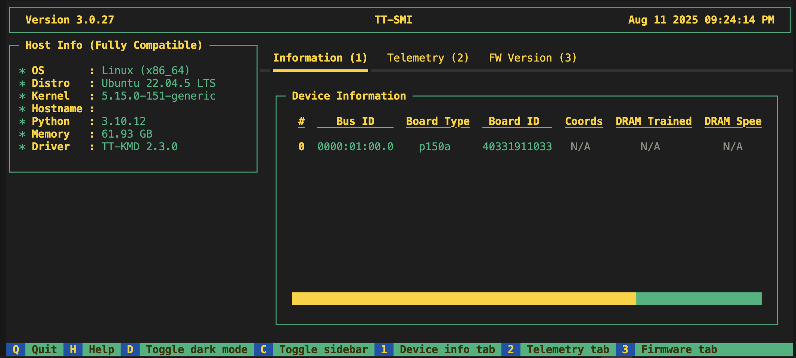

Installing the Tenstorrent Software Stack
This guide assists users who have completed the physical hardware setup of their Tenstorrent system. You will learn how to install the Tenstorrent software stack, including system dependencies, drivers, and the TT-Metalium™ development environment, and how to verify the installation.
Before You Begin
Before you begin the software installation, ensure your host machine meets the following prerequisites:
The host machine has an internet connection to download software packages.
The host machine has a supported operating system installed (Supported OS listed below)
Tenstorrent also supports other operating systems but are considered experimental at this point
You have administrator privileges on the host machine.
The system is physically unboxed and set up according to your product’s installation manual and safety guidelines.
Supported Operating Systems
Tenstorrent recommends Ubuntu 22.04 LTS (Jammy Jellyfish) for all Tenstorrent software. While each SDK may support newer distributions of Ubuntu, consider their compatibility experimental at this time.
BIOS Requirements
The BIOS for your host motherboard should configure the PCIe AER Reporting Mechanism to be set to OS First. Tenstorrent’s TT-SMI software requires this setting to function properly.
Important
If you are using a TT-QuietBox, you do not have to worry about setting this option. It is set to OS First by default.
If you update or reset your BIOS for any reason, you must reconfigure the PCIe AER Reporting Mechanism setting to OS First to ensure TT-SMI functions correctly. This setting is typically located in the Motherboard Information section of your BIOS.
Running the Installer Script
Tenstorrent recommends using the tt-installer script to install the Tenstorrent software stack. This script automates the setup process and is compatible with Ubuntu, Fedora, and Debian operating systems.
1. Execute the installer
The installer has two dependencies, curl and jq. Install them using your system package manager. For example, on Ubuntu, run:
sudo apt update && sudo apt install -y curl jq
Now, to begin the installation, execute the following command in your terminal:
/bin/bash -c "$(curl -fsSL https://github.com/tenstorrent/tt-installer/releases/latest/download/install.sh)"
You will be prompted to select which software you wish to install. The first thing you will see looks like:
__ __ __
/ /____ ____ _____/ /_____ _____________ ____ / /_
/ __/ _ \/ __ \/ ___/ __/ __ \/ ___/ ___/ _ \/ __ \/ __/
/ /_/ __/ / / (__ ) /_/ /_/ / / / / / __/ / / / /_
\__/\___/_/ /_/____/\__/\____/_/ /_/ \___/_/ /_/\__/
[INFO] Welcome to tenstorrent!
[INFO] This is tt-installer version 1.6.0
[INFO] Log is at /tmp/tenstorrent_install_l2ULbx/install.log
[INFO] Using software versions:
[INFO] TT-KMD: 2.3.0
[INFO] Firmware: 18.7.0
[INFO] System Tools: 1.3.1
[INFO] tt-smi: 3.0.27
[INFO] tt-flash: 3.4.2
[INFO] This script will install drivers and tooling and properly configure your tenstorrent hardware.
OK to continue? [Y/n]
Answer “Y” to continue.
2. Grant Root Privileges
Next, the installation will start and ask you to grant the script sudo permissions:
[INFO] Starting installation
[INFO] Checking for sudo permissions... (may request password)
[sudo] password for <your-username>:
Required
Using sudo is required so you must enter your user’s password.
3. Install TT-Metalium Slim Container
tt-installer configures necessary packages on your system and installs system-level tools as well as our programming framework, TT-Metalium. By default, TT-Metalium is installed as a container using Podman. This containerized environment is appropriate for most users as explained here, but advanced users and developers may wish to install Metalium natively on the host system or use Docker instead of Podman. See TT-NN / TT-Metalium Installation for manual installation instructions.
Next, you will be prompted whether to install the TT-Metalium slim container:
[INFO] Would you like to install the TT-Metalium slim container?
[INFO] This container is appropriate if you only need to use TT-NN
Install Metalium [Y/n]
Optional
This container possesses a release installation of tt-nn and tt-metalium. If you want if you want to use tt-nn / tt-metalium to build software, answer “Y” to this question”, otherwise, answer “N”.
4. Install TT-Metalium Model Demos Container
Next, you will be prompted whether to install the TT-Metalium Model Demos container:
[INFO] Would you like to install the TT-Metalium Model Demos container?
[INFO] This container is best for users who need more TT-Metalium functionality, such as running prebuilt models, but it's large (10GB)
Install Metalium Models [Y/n]
Optional
This container possesses a full build of the tt-metal project, including model demo source code. If you want to run model demos answer “Y” to this question”, otherwise, answer “N”.
5. Choose Python Package Installation Location
Next, you will be asked to select how you would like to install Python packages. Our software is distributed in many forms, one of them being Python packages. We provide four installation options:
[INFO] How would you like to install Python packages?
1) active-venv: Use the active virtual environment
2) new-venv: [DEFAULT] Create a new Python virtual environment (venv) at /home/$USER/.tenstorrent-venv
3) system-python: Use the system pathing, available for multiple users. *** NOT RECOMMENDED UNLESS YOU ARE SURE ***
4) pipx: Use pipx for isolated package installation
Enter your choice (1-4) or press enter for default (new-venv):
If this is your first time running tt-installer, we recommend using the second, DEFAULT option.
6. Install System Software Dependencies
Next, tt-installer will install:
TT-KMD, the Kernel-Mode Driver
TT-Flash, the utility to flash firmware blobs to Tenstorrent devices
TT-Firmware, the on-device firmware
HugePages, a system tool for improving memory performance
TT-SMI, the System Management Interface
7. Reboot System
Important
At the end of the installation process, you will be prompted to answer this question:
[INFO] Would you like to reboot now?
You must answer “Y” if this is your first time running tt-installer on your system.
Verify System Software Installation
After rebooting your system, verify all system software dependencies were successfully installed and loaded. This section will introduce you to the tt-smi tool, which we’ll use to enumerate all Tenstorrent devices.
First, activate the Python environment in which you installed the required Python packages. You performed this environment selection in Step 5. Choose Python Package Installation Location.
Note
If you selected the DEFAULT option which installs all Python packages under /home/$USER/.tenstorrent-venv/bin/activate. Execute this command to activate the Python virtual environment:
source ~/.tenstorrent-venv/bin/activate
If you did not, use the installation path you chose in step 5.
Next, execute this command to start tt-smi, then ensure the number of devices listed under the “Device Information” pane matches the number of Tenstorrent devices installed in your system:
tt-smi
Here is an example of what you should see for a system containing a single p150a device: 
Important
If the number of listed devices does not match what you expect, please contact support and we will assist you.
Congratulations, you have successfully installed Tenstorrent’s system software!
Exploring Alternative Installation Methods
For advanced users or developers who prefer alternative installation methods for the software stack, refer to the manual software installation guide.
First Things To Do
After tt-installer finishes successfully and you have restarted your system, you can proceed how you like. You may want to:
-
Explore pre-built demonstrations of popular models like Llama, Whisper, Stable Diffusion and ResNet.
This is a great way to see Tenstorrent’s software in action without deep dives into model architecture.
-
This is the recommended path users should take to deploy LLMs.
Understanding the Tenstorrent Software Stack.
Learn more about our unique architecture by reading this guide.
Need Additional Support?
If you encounter any issues, or have a question that isn’t covered in the documentation, please raise a support request. Our team will review your request and provide assistance.